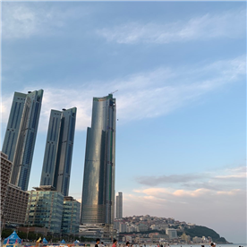
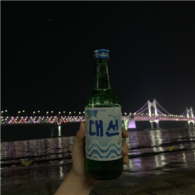

°˖✧부산✧˖°
 떠나요~ 둘이서~~ 모든 걸 훌훌 버리고~♪ ‘김주영’이 추천하는 여행지는 바로! <부산>입니다!
저는 이번 여름에 친구들과 함께 부산 여행을 다녀왔는데요! 정말 먹거리부터 놀거리까지 가득해서 뭘 해도 즐거웠답니다:)
해운대부터 더베이, 수변공원, 해성막창(진짜 완전 맛있음), 달맞이 공원 등등 여러 곳을 가봤는데,
그 중에서도 한 번쯤가볼 흥미로운(?) 곳은 바로 <수변공원> 이랍니다!
수변공원은 가족보단 친구들과 가면 더 좋은 곳인데요, 그 이유는 바로 헌팅의 장이기 때문입니다.흐흐ㅎㅎ
저는 특별한 날, 그곳에서 잠깐 만나서 즐겁게 새로운 사람들과 추억을 쌓은 경험이 나름 나쁘지 않고 재밌었답니다!
그리고 수변 공원은 꼭 헌팅만이 아니라, 바다 향을 맡으며 회, 전 등등 맛있는 먹거리와 함께 부산에서만 파는 술인
‘대선’을 딱 마시면 진정한 부산을 느낄 수 있답니다:)
부산 여행의 추천 음악도 있는데요! 바로 'Ed Sheeran – Beautiful People' 입니다!
이 노래를 들으면 흥도 오르고, 부산에 다녀온 후 이 노래만 들으면 다시 그 날로 돌아간 듯한 기분이 들어요~!
정말 추천하고 싶은 노래와 부산! 다음 해 여름 여행은 <부산>이 어떠신가요?!